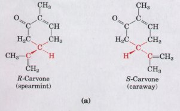
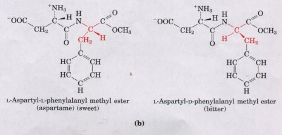
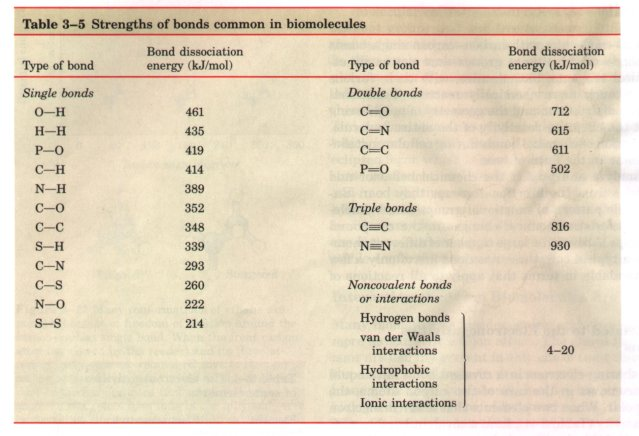
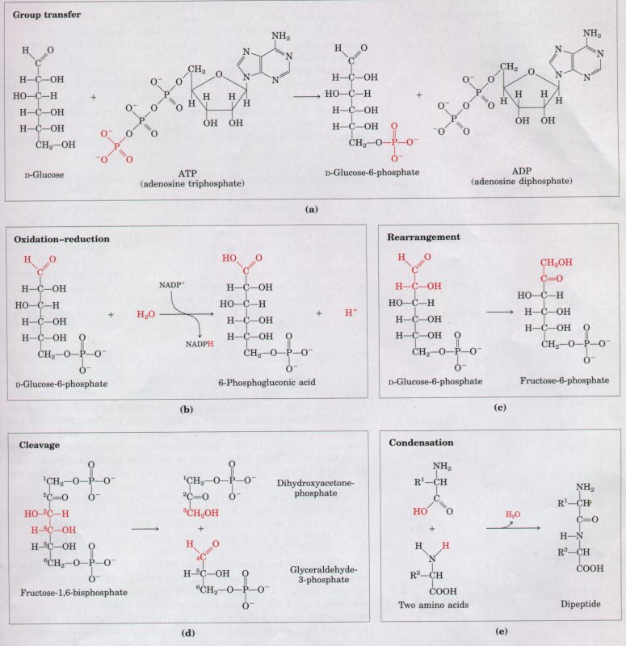
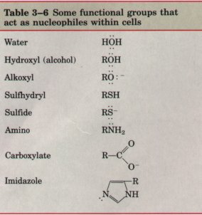

Many biomolecules besides amino acids are chiral, containing one or more asymmetric carbon atoms. The chiral molecules in living organisms are usually present in only one of their chiral forms. For example, the amino acids occur in proteins only as the L isomers. Glucose, the monomeric subunit of starch, has five asymmetric carbons, but occurs biologically in only one of its chiral forms, the n isomer. (The conventions for naming stereoisomers of the amino acids are described in Chapter 5; those for sugars, in Chapter 11). In contrast, when a compound having an asymmetric carbon atom is chemically synthesized in the laboratory, the nonbiological reactions usually produce all possible chiral forms in an equimolar mixture that does not rotate polarized light (a racemic mixture). The chiral forms in such a mixture can be separated only by painstaking physical methods. Chiral compounds in living cells are produced in only one chiral form because the enzymes that synthesize them are also chiral molecules.
Stereospecificity, the ability to distinguish between stereoisomers, is a common property of enzymes and other proteins and a characteristic feature of the molecular logic of living cells. If the binding site on a protein is complementary to one isomer of a chiral compound, it will not be complementary to the other isomer, for the same reason that a left glove does not fit a right hand. Two striking examples of the ability of biological systems to distinguish stereoisomers are shown in Figure 2-13.
  |
Figure 3-13 Stereoisomers that are distinguished by sensory receptors for smell and taste in humans. (a) Two stereoisomers of carvone, designated R and S (see Fig. 3-10, legend). R-carvone (from spearmint oil) has the characteristic fragrance of spearmint; S-carvone (from caraway seed oil) smells like caraway. (b) Aspartame, the artificial sweetener sold under the trade name NutraSweet, is easily distinguishable by taste from its bitter-tasting stereoisomer, although the two differ only in the configuration about one of the two chiral carbon |
Saturated hydrocarbons-molecules with carbon-carbon single bonds and without double bonds or substituent groups-are not easily attacked by most chemical reagents; biomolecules, with their various functional groups, are much more chemically reactive. Functional groups alter the electron distribution and the geometry of neighboring atoms and thus affect the chemical reactivity of the entire molecule. The breakage and formation of chemical bonds during cellular metabolism release energy, some in the form of heat.
It is possible to analyze and predict the chemical behavior and reactions of biomolecules from the functional groups they bear. Enzymes recognize a specific pattern of functional groups in a biomolecule and catalyze characteristic chemical changes in the compound that contains these groups. Although a large number of different chemical reactions occur in a typical cell, these reactions are of only a few types, readily understandable in terms that apply to all reactions of organic compounds.
| When the two atoms sharing electrons in
a covalent bond have equal affinities for the electrons,
as in the case of two carbon atoms, the resulting bond is
nonpolar. When two elements that differ in electron
affinity, or electronegativity (Table 3-4), form a
covalent bond (e.g., C and O), that bond is polarized;
the shared electrons are more likely to be in the region
of the more electronegative atom (O) than of the less
electronegative ( C ). In the extreme case of two atoms
of very different electronegativity (Na and Cl, for
example), one of the atoms actually gives up the
electron(s) to the other atom, resulting in the formation
of ions and ionic interactions such as those in solid
NaCI. The strength of chemical bonds (Table 3-5) depends upon the relative electronegativities of the elements involved, the distance of the bonding electrons from each nucleus, and the nuclear charge. The number of electrons shared also influences bond strength; double bonds are stronger than single bonds, and triple bonds are stronger yet. The strength of a bond is expressed as bond energy, in joules. (In biochemistry, calories have often been used as units of energy-bond energy and free energy, for example. The joule is the unit of energy in the International System of Units, and is used throughout this book. For conversions, 1 cal is equal to 4.18 J. ) Bond energy can be thought of as either the amount of energy required to break a bond or the amount of energy gained by the surroundings when two atoms form the bond. One way to put energy into a system is to heat it, which gives the molecules more kinetic energy; temperature is a measurement of the average kinetic energy of a population of molecules. When molecular motion is sufficiently violent, intramolecular vibrations and intermolecular collisions sometimes break chemical bonds. Heating raises the fraction of molecules with energies high enough to react. |
*The higher the number , the more electronegative is the element . |
||||||||||||||||||||||||||||||||||||||||||||||||||

In chemical reactions, bonds are broken and new ones are formed. The difference between the energy from the surroundings used to break bonds and the energy gained by the surroundings in the formation of new ones is virtually identical to the enthalpy change for the reaction, ΔH. (The energy difference becomes exactly equal to the enthalpy change after a slight correction for any volume change in the system at constant pressure.) If heat energy is absorbed by the system as the change occurs (that is, if the reaction is endothermic), then ΔH has, by defmition, a positive value; when heat is produced, as in exothermic reactions, ΔH is negative. In short, the change in enthalpy for a covalent reaction reflects the kinds and numbers of bonds that are made and broken. As we shall see later in this chapter, the enthalpy change is one of three factors that determine the free-energy change for a reaction; the other two are the temperature and the change in entropy.
Most cells have the capacity to carry out thousands of specific, enzymecatalyzed reactions: transformation of simple nutrients such as glucose into amino acids, nucleotides, or lipids; extraction of energy from fuels by oxidation; or polymerization of subunits into macromolecules, for example. Fortunately for the student of biochemistry, there is a pattern in this multitude of reactions; we do not need to learn all of these reactions to comprehend the molecular logic of life.
Most of the reactions in living cells fall into one of five general categories (Fig. 3-14): functional-group transfers (a), oxidations and reductions (b), reactions that rearrange the bond structure around one or more carbons (c), reactions that form or break carbon-carbon bonds (d), and reactions in which two molecules condense, with the elimination of a molecule of water (e). Reactions within one category generally occur by similar mechanisms.

Figure 3-14 Examples of five general types of chemical transformations that occur in cells. The reactions (a) through (d) are enzyme-catalyzed reactions that take place in your tissues as you use glucose as a source of energy (Chapter 14). In (a) a phosphoryl group is transferred from ATP to glucose; (b) an aldehyde is oxidized to a carboxylic acid and an oxidized electron carrier (NADP+) is reduced; (c) a rearrangement converts an aldehyde to a ketone; (d) a molecule is cleaved to form two smaller molecules. Reaction (e) represents the condensation of two amino acids with the elimination of H20 to form a peptide bond; condensation reactions occur in many cellular processes in which larger molecules are assembled from small precursors.
| The mechanisms of biochemical reactions are not fundamentally different from other chemical reactions. Many biochemical reactions involve interactions between nucleophiles, functional groups rich in electrons and capable of donating them, and electrophiles, electrondeficient functional groups that seek electrons. Nucleophiles combine with, and give up electrons to, electrophiles. Functional groups containing oxygen, nitrogen, and sulfur are important biological nucleophiles (Table 3-6). Positively charged hydrogen atoms (protons) and positively charged metals (cations) frequently act as electrophiles in cells. A carbon atom can act as either a nucleophilic or an electrophilic center, depending upon which bonds and functional groups surround it. |  |